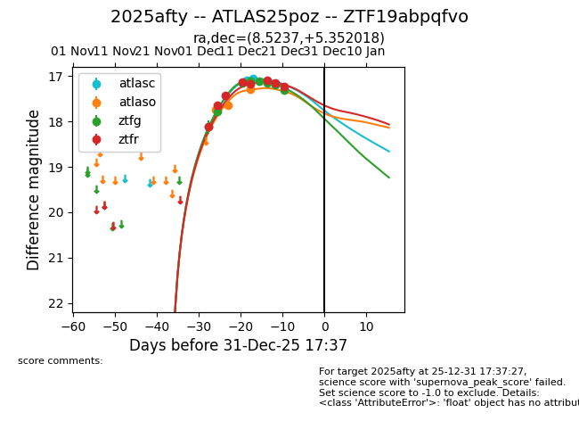
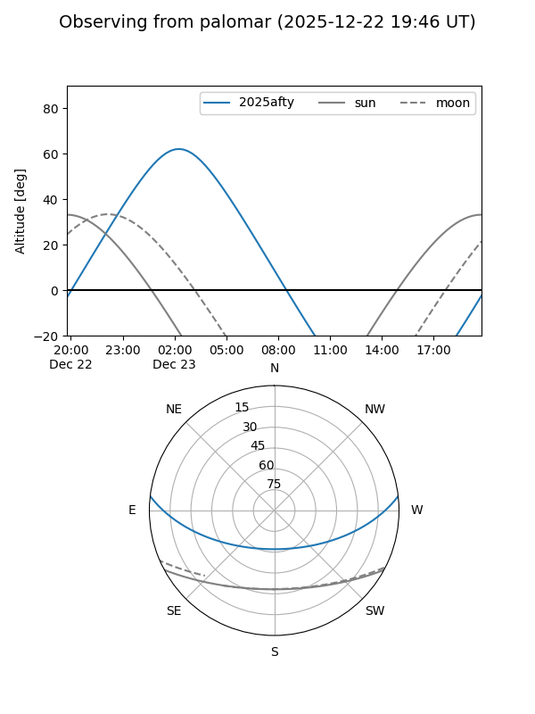
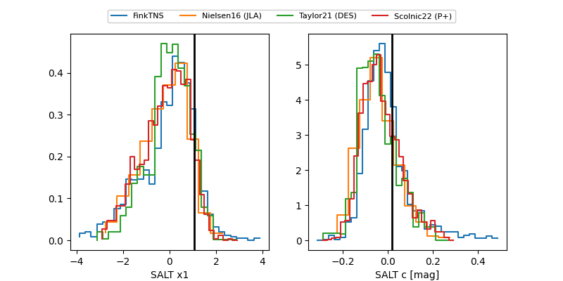

2025afty
Target 2025afty at 2025-12-18 10:45
Aliases and brokers:
FINK: fink-portal.org/ZTF19abpqfvo
Lasair: lasair-ztf.lsst.ac.uk/objects/ZTF19abpqfvo
ALeRCE: alerce.online/object/ZTF19abpqfvo
TNS: wis-tns.org/object/2025afty
YSE: ziggy.ucolick.org/yse/transient_detail/2025afty
alt names
ZTF19abpqfvo (ztf,fink_ztf)
2025afty (tns,yse)
ATLAS25poz (atlas)
Coordinates:
equatorial (ra, dec) = 8.5237,+5.35202
equatorial (HMS+DMS) = 00:34:05.69,+05:21:07.26
galactic (l, b) = (114.9338,-57.25016)
Photometry
last atlasc=17.06, atlaso=17.29, ztfg=17.16, ztfr=17.09
2 atlasc, 3 atlaso, 6 ztfg, 6 ztfr detections
Lightcurve

Visibility


Additional plots
